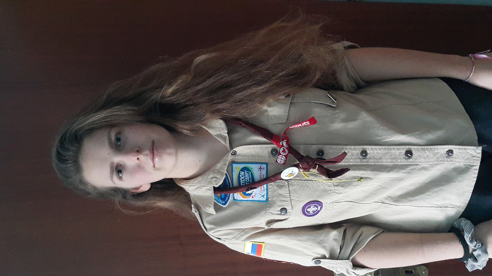
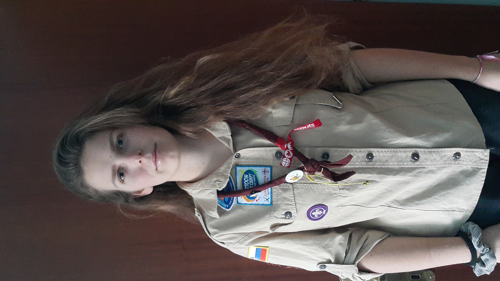

NALOGA ŠT. 4:
Četrta naloga. Party. Tukajle povežte slikco Tinkare (ali Belce <3) s pripadajočim izmed 12 taborniških zakonov.
Koda do naslednje naloge so skupaj zlepljene številke slik v pravilnem vrsten redu. Na primer, če prva slika pripada prvemu zakonu in tako naprej, potem je rešitev "123456789101112".
- 1. Tabornik je zanesljiv
- 2. Tabornik je zvest
- 3. Tabornik je prijazen
- 4. Tabornik je pripravljen pomagati
- 5. Tabornik je discipliniran
- 6. Tabornik je veder
- 7. Tabornik je pogumen
- 8. Tabornik je plemenit
- 9. Tabornik je spoštljiv
- 10. Tabornik je vedoželjen
- 11. Tabornik je varčen
- 12. Tabornik živi zdravo


 



link na naslednjo stran